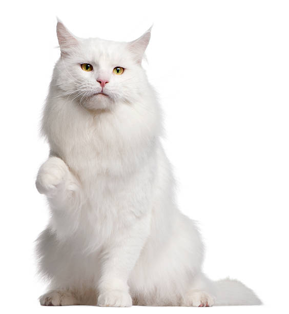
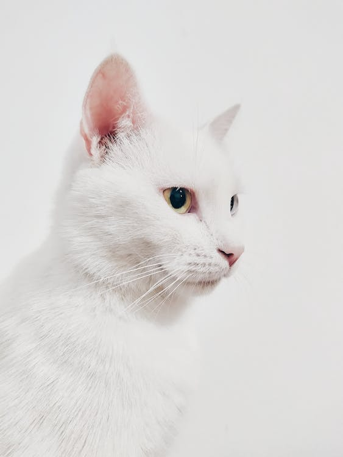

La vida de Gloottis
En enero de 2009, en la ciudad de Córdoba, Argentina, nació un gatito blanco llamado Glottis. Desde sus primeros días, su pelaje blanco como la nieve y sus ojos curiosos lo hicieron destacar entre sus hermanos felinos. Criado con cariño por su dueño, Agustín Maciel, Glottis comenzó a explorar el mundo que lo rodeaba con una insaciable curiosidad..
A medida que los años pasaron, Agustín Maciel tomó la decisión de mudarse a la fascinante ciudad de Buenos Aires. Glottis, acompañando a su dueño en esta nueva aventura, descubrió un mundo completamente diferente. Las calles bulliciosas y la energía de la gran ciudad lo cautivaron, y pronto se sintió como en casa en la capital argentina.
Uno de los aspectos más notables de la personalidad de Glottis fue su pasión por el tango. Mientras Agustín Maciel bailaba al ritmo apasionado del tango en su hogar, Glottis se unía al espectáculo, moviendo su cola en sincronía con la música. Parecía que la pasión por el tango era un lazo especial que compartían el gato y su dueño. Sin embargo, lo que realmente destacaba en la vida de Glottis era su inusual interés por la política. Cuando Agustín Maciel sintonizaba las noticias en la televisión, Glottis se sentaba a su lado, observando con atención las discusiones políticas. Su mirada fija y concentrada parecía indicar que entendía más de lo que se esperaría de un simple gato. Con el tiempo, comenzaron a surgir bromas entre los amigos cercanos de Agustín Maciel sobre el deseo secreto de Glottis de convertirse en presidente de Argentina. Aunque su incapacidad para expresarse en palabras humanas limitaba su participación en la política, su pasión y dedicación eran indiscutibles.
A pesar de su interés en la política, Glottis nunca dejó de lado su amor por el tango. Era un espectáculo verlo moverse al ritmo de la música, como si su cuerpo blanco y elegante fuera una extensión misma de la melodía. A lo largo de los años, la historia de Glottis se convirtió en una inspiración para quienes lo conocían. Su curiosidad, su pasión por el tango y su inusual aspiración presidencial dejaron una marca indeleble en el corazón de Agustín Maciel y en la memoria de todos los que compartieron su vida. Glottis, el gato blanco con sueños inusuales y un amor profundo por el tango, demostró que las ambiciones más sorprendentes pueden encontrar su camino en los lugares más inesperados.